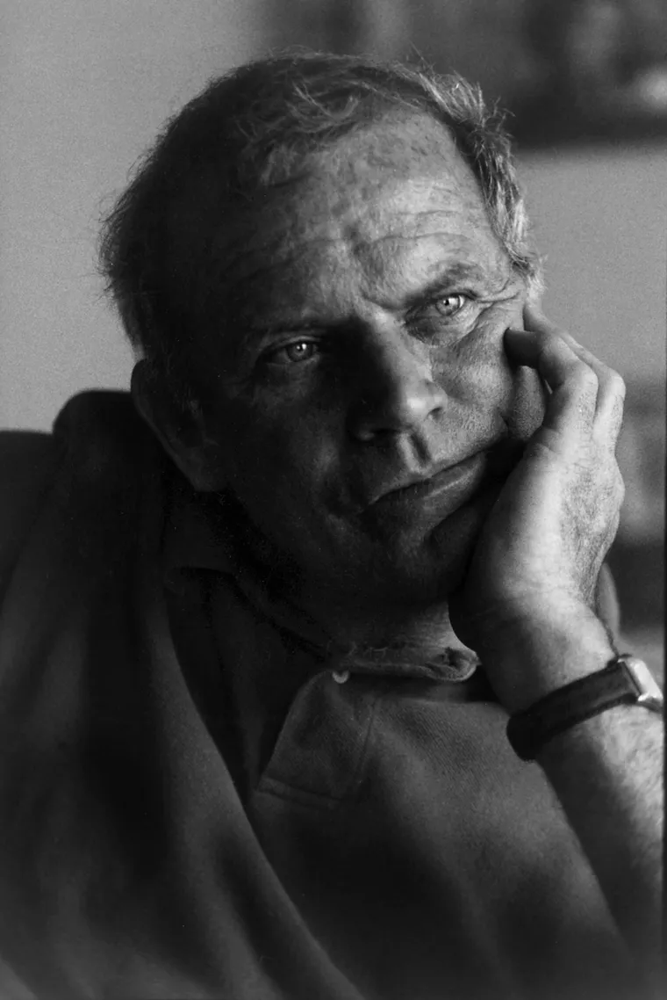
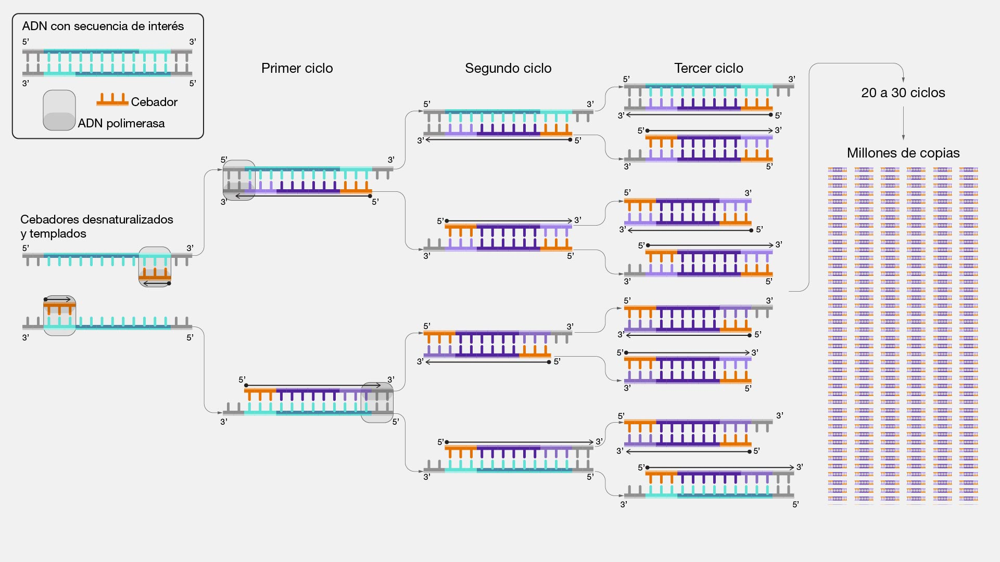

Una idea en la ruta 128
En una noche de primavera de 1983, Kary Mullis conducía por la autopista 128 en California cuando tuvo una idea que cambiaría la biología para siempre. ¿Y si existiera una forma de copiar una molécula de ADN millones de veces en pocas horas? No en un laboratorio gigante, no con equipamiento de millones de dólares, sino con una máquina simple, unos pocos reactivos y ciclos de calentamiento y enfriamiento. Esa idea se llamó PCR: Reacción en Cadena de la Polimerasa.
La PCR no descubre nada nuevo sobre el ADN. No revela su estructura ni descifra sus genes. Lo que hace es algo mucho más práctico y poderoso: amplifica. Toma una cantidad ínfima de ADN —una sola molécula, una gota de sangre, un hisopado nasal— y la multiplica hasta tener miles de millones de copias idénticas, suficientes para analizarla, identificarla y diagnosticar.
Décadas después, cuando un virus desconocido comenzó a propagarse desde Wuhan en diciembre de 2019, la PCR se convirtió en el arma diagnóstica principal contra la pandemia de COVID-19. Sin ella, no habríamos podido saber quién estaba infectado, rastrear la propagación ni tomar decisiones de salud pública. La PCR es el puente perfecto entre ciencia básica y tecnología aplicada.
Kary Mullis: el genio excéntrico

Mullis no era un científico tradicional. Era surfista, escritor y un personaje inclasificable. La comunidad científica dudó inicialmente de su técnica: parecía demasiado simple para funcionar. Pero la PCR era elegante justamente por su simplicidad: usaba un principio fundamental del ADN —su capacidad de replicarse— y lo convertía en una herramienta práctica.
La PCR es un caso fascinante para la filosofía de la ciencia: Mullis no descubrió nada nuevo sobre la naturaleza. Lo que hizo fue combinar conocimientos existentes (la replicación del ADN, la enzima polimerasa, los efectos del calor) de una manera nueva para crear una tecnología. Esto plantea preguntas filosóficas: ¿cuál es la diferencia entre descubrimiento científico e invención tecnológica? ¿La PCR es ciencia o tecnología? ¿O es el punto exacto donde una se convierte en la otra?
¿Cómo funciona la PCR?
La PCR explota una propiedad fundamental del ADN: cuando se calienta, las dos cadenas de la doble hélice se separan. Cuando se enfría, cada cadena puede servir como molde para crear una copia nueva. Repitiendo este ciclo de calentar y enfriar muchas veces, cada ciclo duplica la cantidad de ADN. Es crecimiento exponencial puro.

Cada ciclo dura apenas unos minutos. En 2-3 horas, la PCR genera suficiente ADN para analizar a partir de una sola molécula original. Es la fotocopiadora molecular más poderosa del mundo.
"Con la PCR, si puedes imaginarlo, puedes hacerlo. Puedes tomar algo aparte, poner todo junto. Puedes diseñar lo que quieras."
La PCR contra el COVID-19

Cuando en enero de 2020 científicos chinos publicaron la secuencia genética del nuevo coronavirus, laboratorios de todo el mundo diseñaron en días primers específicos para detectarlo mediante PCR. En cuestión de semanas, el test RT-PCR (PCR con transcriptasa reversa, ya que el COVID es un virus de ARN) se convirtió en el estándar de oro para el diagnóstico.
1. Muestra: Se toma un hisopado nasofaríngeo del paciente. En esa muestra puede haber virus (ARN viral).
2. Transcripción reversa: Como el SARS-CoV-2 tiene ARN (no ADN), primero se convierte el ARN en ADN con una enzima llamada transcriptasa reversa. Por eso se llama RT-PCR.
3. Amplificación: Se aplica la PCR clásica para multiplicar el ADN viral millones de veces.
4. Detección: Si el ADN viral se amplifica (hay señal fluorescente), el test es positivo. Si no se amplifica, es negativo — no había virus en la muestra.
Durante la pandemia, se realizaron más de 5.000 millones de tests PCR en todo el mundo. En Argentina, el sistema de diagnóstico dependió casi exclusivamente de esta técnica durante 2020 y 2021. Cada test PCR positivo activaba protocolos de aislamiento, rastreo de contactos y decisiones de política sanitaria.
Sin la PCR, no habría habido diagnóstico preciso. Sin diagnóstico, no habría sido posible saber cuántos infectados había, ni tomar decisiones de cuarentena, ni evaluar la efectividad de las vacunas. Una técnica de laboratorio de 1983 determinó la política global del siglo XXI.
¿Dónde termina la ciencia y empieza la tecnología?
La historia de la PCR es el caso perfecto para discutir uno de los temas centrales de nuestra materia: la relación entre ciencia básica, ciencia aplicada y tecnología. ¿Son cosas distintas o un continuo?
Perspectiva de Kuhn: La PCR no representa un cambio de paradigma en sí misma. Trabaja dentro del paradigma de la biología molecular. Pero su impacto fue tan grande que transformó la práctica de la biología: después de la PCR, la genética ya no fue la misma. ¿Puede una herramienta técnica provocar una revolución científica?
Perspectiva de Popper: La PCR reforzó enormemente la capacidad de testear hipótesis genéticas. Antes, verificar si un gen estaba presente requería semanas. Con PCR, horas. ¿Una tecnología que hace más fácil la falsación fortalece la empresa científica?
Perspectiva CTS (Ciencia-Tecnología-Sociedad): La PCR muestra que la relación entre ciencia y sociedad no es unidireccional. La sociedad demanda diagnósticos (COVID) → la ciencia provee la técnica (PCR) → la tecnología la produce masivamente → los resultados transforman la política y la vida social.
"La PCR es a la biología molecular lo que el telescopio fue a la astronomía: no cambia lo que hay afuera, pero cambia radicalmente lo que podemos ver."
🤔 Para pensar y debatir
-
1
La PCR fue inventada en 1983 pero recién fue masivamente utilizada en 2020 con el COVID. ¿Qué nos dice esto sobre la relación entre invención tecnológica y necesidad social? ¿La tecnología espera a que la sociedad la necesite?
-
2
Mullis recibió el Nobel por una técnica, no por un descubrimiento teórico. ¿Debería la ciencia premiar igual a quienes descubren conocimiento puro y a quienes inventan herramientas prácticas? ¿Por qué?
-
3
Durante la pandemia, los resultados de los tests PCR determinaron si las personas podían trabajar, viajar o ver a sus familias. ¿Qué poder tiene una tecnología cuando se convierte en herramienta de política pública? ¿Quién debería controlar ese poder?
-
4
Sin los descubrimientos de Watson, Crick y Kornberg sobre el ADN, la PCR no habría sido posible. ¿Puede existir tecnología sin ciencia básica previa? ¿Y puede la ciencia básica progresar sin herramientas tecnológicas?
-
5
La PCR también se usa para pruebas de paternidad, identificación de víctimas de desastres, y resolución de crímenes. ¿Hasta qué punto una misma tecnología puede servir tanto al bien como al control social? ¿Existen límites éticos en el uso de la PCR?